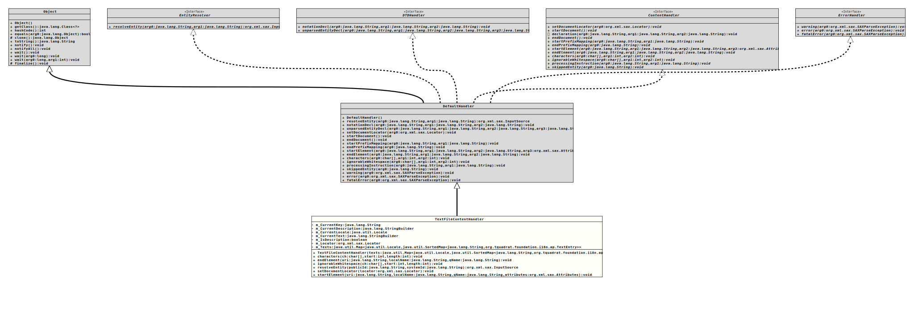

Package org.tquadrat.foundation.i18n.ap
Class TextFileContentHandler
java.lang.Object
org.xml.sax.helpers.DefaultHandler
org.tquadrat.foundation.i18n.ap.TextFileContentHandler
- All Implemented Interfaces:
ContentHandler,DTDHandler,EntityResolver,ErrorHandler
@ClassVersion(sourceVersion="$Id: TextFileContentHandler.java 1062 2023-09-25 23:11:41Z tquadrat $")
@API(status=INTERNAL,
since="0.1.0")
public final class TextFileContentHandler
extends DefaultHandler
The implementation for a
DefaultHandler
that handles the files for additional text resources.- Author:
- Thomas Thrien (thomas.thrien@tquadrat.org)
- Version:
- $Id: TextFileContentHandler.java 1062 2023-09-25 23:11:41Z tquadrat $
- Since:
- 0.1.0
- UML Diagram
-

UML Diagram for "org.tquadrat.foundation.i18n.ap.TextFileContentHandler"
{kind=link}
-
Field Summary
FieldsModifier and TypeFieldDescriptionprivate final StringBuilderThe description for the current text entry.private StringThe key for the current text entry.private LocaleThe locale for the current translation.private final StringBuilderThe current text.private booleanFlag that indicates if currently a description is being processed.private LocatorThe document locator.The map that holds the texts. -
Constructor Summary
Constructors -
Method Summary
Modifier and TypeMethodDescriptionfinal voidcharacters(char[] ch, int start, int length) final voidendElement(String uri, String localName, String qName) final voidignorableWhitespace(char[] ch, int start, int length) final InputSourceresolveEntity(String publicId, String systemId) final voidsetDocumentLocator(Locator locator) final voidstartElement(String uri, String localName, String qName, Attributes attributes) Methods inherited from class org.xml.sax.helpers.DefaultHandler
endDocument, endPrefixMapping, error, fatalError, notationDecl, processingInstruction, skippedEntity, startDocument, startPrefixMapping, unparsedEntityDecl, warningMethods inherited from class java.lang.Object
clone, equals, finalize, getClass, hashCode, notify, notifyAll, toString, wait, wait, waitMethods inherited from interface org.xml.sax.ContentHandler
declaration
-
Field Details
-
m_CurrentKey
The key for the current text entry. -
m_CurrentDescription
The description for the current text entry. -
m_CurrentLocale
The locale for the current translation. -
m_CurrentText
The current text. -
m_IsDescription
Flag that indicates if currently a description is being processed. -
m_Locator
The document locator. -
m_Texts
The map that holds the texts. The key of this map is the locale for the text or message translation, while the values are Maps with the text entries itself, using the message or text id as the id.
-
-
Constructor Details
-
TextFileContentHandler
Creates a newTextFileContentHandlerinstance.- Parameters:
texts- The texts for the resources.
-
-
Method Details
-
characters
- Specified by:
charactersin interfaceContentHandler- Overrides:
charactersin classDefaultHandler- Throws:
SAXException
-
endElement
- Specified by:
endElementin interfaceContentHandler- Overrides:
endElementin classDefaultHandler- Throws:
SAXException
-
ignorableWhitespace
- Specified by:
ignorableWhitespacein interfaceContentHandler- Overrides:
ignorableWhitespacein classDefaultHandler- Throws:
SAXException
-
resolveEntity
public final InputSource resolveEntity(String publicId, String systemId) throws IOException, SAXException - Specified by:
resolveEntityin interfaceEntityResolver- Overrides:
resolveEntityin classDefaultHandler- Throws:
IOExceptionSAXException
-
setDocumentLocator
- Specified by:
setDocumentLocatorin interfaceContentHandler- Overrides:
setDocumentLocatorin classDefaultHandler
-
startElement
public final void startElement(String uri, String localName, String qName, Attributes attributes) throws SAXException - Specified by:
startElementin interfaceContentHandler- Overrides:
startElementin classDefaultHandler- Throws:
SAXException
-